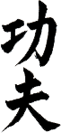
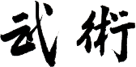

L'AKSVB - école de kung fu shaolin Vu Ba - propose à Strasbourg des cours de kung fu traditionnel sino-vietnamien, de danse de licorne et danse de dragon, de combats - sanda, sanshou, boxe vietnamienne - et d'acrobaties.
Héritier du style, Maître Rémy Huynh Hoareau est le dépositaire de la technique shaolin Vu Ba en France et au Vietnam.
Formé notamment par le Maître et son fils, Erwin Guet dirige aujourd'hui l'école de Strasbourg.
Les cours sont dispensés à l'école du Neufeld, 1 rue du Sundgau, 67000 Strasbourg.
Pour plus d'informations : horaires et inscriptions.

Le maître
Maître Rémi Huynh Hoareau apprend le kung fu dans son adolescence auprès de trois Maîtres :
- Le Maître Nang Tieng, maître en kung fu traditionnel avec lequel Maître Rémi Huynh apprend les bases du kung fu pendant près de 10 ans.
- Le grand Maître Huynh Tien, maître de boxe libre vietnamienne, qui lui transmet son nom de combat
- Le grand Maître Vu Ba Oai, maître de kung fu traditionnel, dont il devient le principal disciple et qui le désigne comme l'héritier du style Shaolin issu de la branche Han Bai.
A 30 ans, considéré comme expert par ses pairs, il est nommé Maître par le Conseil des Maîtres de la Fédération Nationale des Arts Martiaux du Viêt-nam. Cela fait de lui le plus jeune Maître jamais désigné jusqu'alors dans le pays.
A 32 ans, Maître Huynh devient Directeur Technique de la Fédération Nationale des Arts Martiaux du Viêt-nam. Il entraîne à ce titre l'équipe nationale professionnelle de boxe libre jusqu'en 1975, date à laquelle il quitte le pays à cause de la guerre.
A cette époque, l'équipe vietnamienne est reconnue comme l'égale des Thaïlandais.
Maître Huynh s'installe donc en France et fonde en 1977, à l'âge de 41 ans, l'école mère de Kung Fu Shaolin, Tai ji Quan et Boxe thaïlandaise Vu Ba.
Dès lors, Maître Rémi Huynh Hoareau œuvre pour la transmission de style Vu Ba, de ses valeurs et de sa tradition.
En juin 2013, il se voit remettre le 9ème duan de Shaolin Do par la Fédération Internationale de Wushu (IWUF), reconnaissant ainsi sa maîtrise de l'art traditionnel, son investissement dans la tradition et la transmission du kung fu aux nouvelles générations et son parcours exceptionnel.

AKSVB Strasbourg
L'école fille de Strasbourg est fondée en 1995 par Albert Hoareau, fils de Maître Huynh Hoareau, et Eric Chabeuf, disciple du Maître et aujourd'hui reconnu au grade de grand frère supérieur de l'école Shaolin Vu Ba.
Erwin Guet, petit frère de l'école, en est le responsable depuis la saison 2012-2013. Disciple de l'école Shaolin Vu Ba depuis l'année 2000, titulaire du certificat de moniteur fédéral, détenteur de la ceinture noire 1er duan, il encarde l'ensemble des cours de la semaine, assisté des anciens pratiquants certifiés.

Cours Enfants
L'école Shaolin Vu Ba propose deux cours par semaine pour les ENFANTS :
- Cours de kung fu traditionnel et moderne le mercredi de 18h00 à 19h30.
- Cours de danse de licorne et danse de dragon le mardi de 19h00 à 21h00.
Lieux :
- Mardi : Gymnase de l'école du Gliesberg, impasse/chemin du Gliesberg, 67200 Strasbourg Koenigshoffen
- Mercredi : Gymnase de l'école du Neufeld, 1 rue du Sundgau, 67100 Strasbourg Neudorf.

Cours Adultes
Les pratiquants ADULTES ont la possibilité de participer à 5 cours par semaine :
- Cours DEBUTANTS de kung fu traditionnel : Mercredi, 19h30 – 21h30
- Cours de danse de licorne et danse de dragon : Mardi, 19h00 – 21h00
- Cours d'acrobaties : Vendredi, 19h00 – 21h00
- Cours de combat sanda et sanshou : Samedi, 14h00 – 18h00
- Cours ANCIENS de kung fu traditionnel : Lundi, 19h00 – 21h30
Lieux
- Lundi, Mercredi, Vendredi, Samedi : Gymnase de l'école du Neufeld, 1 rue du Sundgau, 67100 Strasbourg Neudorf.
- Mardi : Gymnase de l'école du Gliesberg, impasse/chemin du Gliesberg, 67200 Strasbourg Koenigshoffen.
Erwin Guet, petit frère de l'école, en est le responsable depuis la saison 2012-2013. Disciple de l'école Shaolin Vu Ba depuis l'année 2000, titulaire du certificat de moniteur fédéral, détenteur de la ceinture noire 1er duan, il encarde l'ensemble des cours de la semaine, assisté des anciens pratiquants certifiés.

Encadrement
Les cours sont actuellement encadrés par :
- Erwin Guet, moniteur fédéral FFWUSHU diplômé, ceinture noire 1er duan.
- Franck Beaubois, moniteur fédéral FFWUSHU diplômé, ceinture noire 1er duan.
- Pierre Chanthalangsy, moniteur fédéral FFWUSHU diplômé, ceinture noire 1er duan.
Kung Fu ADULTES (Kung Fu Traditionnel)
Ce cours est dédié à l'apprentissage du style Shaolin Vu Ba. Ce style de kung fu est issu de la branche Han Bai du Shaolin du Fukien et de la boxe libre vietnamienne.
Au programme :
- Méditation.
- Techniques de bases.
- Taos à mains nues.
- Taos d'armes.
- Taos de forme.
- Applications de taos.
- Self-défenses.
- Acrobaties gymniques issues du kung fu.


Kung Fu ENFANTS (Kung fu traditionnel et Kung fu Wushu moderne)
Ce cours accueille les enfants de 5 à 12 ans inclus. Il est dédié à l'apprentissage des techniques de bases de deux styles de kung fu différents :
- le Shaolin Vu Ba traditionnel.
- le Wushu moderne, plus facile à appréhender pour les enfants.
L'enseignement se veut ludique et traditionnel. Au programme :
- Méditation.
- Techniques de base.
- Taos à mains nues.
- Taos d'armes.
- Rudiments du combat sanda dans sa forme « éveil ».


Combats
Trois formes de combat sont dispensées au sein de l'école : le sanda, le sanshou traditionnel et la boxe libre vietnamienne. Ces formes de combats compilent les frappes pieds-poings, les saisies-projections et les techniques de balayages. La boxe libre vietnamienne se différencie du sanda et du sanshou traditionnel par l'ajout des frappes de coudes et de genou.


Danse de Licorne / Dragon
L'AKSVB propose l'étude des danses traditionnelles de licorne et de dragon. Les pratiquants initiés aux danses ont la possibilité de rejoindre l'équipe de démonstration sollicitée lors du nouvel an asiatique et d'événements tels que mariages, fêtes communautaires, carnavals, etc.
Danse de Licorne
Le style de danse de licorne pratiquée est celui du fukien traditionnel – ou futsan. Elle se joue en binôme, accompagnée par des percussions au tambour et des cymbales.
Au programme :
- Pas de base.
- Maniement du corps et de la tête de licorne.
- Portés et acrobaties.
- Taos.
- Percussions au tambour et cymbales.
Danse de dragon
La danse de dragon se pratique à 9 personnes pour les adultes, à 5 personnes pour les enfants. Cette danse demande un important travail de synchronisation pour animer le dragon. Les danseurs manient chacun une longue perche en aluminium ou en bambou au bout de laquelle se trouve une partie du corps du dragon. Cette danse est également accompagnée par des percussions au tambours et des cymbales.


Acrobaties
Ce cours est dédié à l'apprentissage de figures gymniques utiles à l'appréhension du sol, au développement de l'agilité et de la souplesse ainsi qu'au travail des self-défenses.

Inscriptions
Inscriptions tout au long de l'année, à partir du second mercredi de septembre. Accueil des débutants : UNIQUEMENT LE MERCREDI.
Pièces à fournir impérativement :
- Cotisation.
- Certificat médical de non contre-indication à la pratique du kung fu en loisir et en compétition.
- 2 photos d'identité.
- Formulaire d'inscription dûment rempli.
- Formulaire d'autorisation parentale pour les enfants et les moins de 18 ans.
L'AKSVB se charge des commandes de tenues et de matériel de boxe pour ses pratiquants :
- Tenue de kung fu.
- Gants de boxe.
- Protèges-tibia.
- Mitaines.
- Coquilles.
Tarifs à l'année
| Paiement en 1 fois | Paiement en 3 fois | |
|---|---|---|
| Adultes | 220€ chèque ou espèce |
2x70€ + 1x80€ chèque uniquement |
| Enfants | 120€ chèque ou espèces |
3x40€ chèque uniquement |
| Encaissement | Début du second mois de pratique |
|
Tarifs demi-année
Uniquement à partir du mois de janvier de la saison en cours
| Paiement en 1 fois | Paiement en 3 fois | |
|---|---|---|
| Adultes | 140€ par chèque ou espèces |
2x50€ + 1x40€ chèque uniquement |
| Enfants | 90€ par chèque ou espèce |
3x30€ chèque uniquement |
La cotisation (paiement en 1 fois ET 3 fois) est remise en totalité au moment de l'inscription.
Démonstrations
L'AKSVB Strasbourg propose des démonstrations de danse de licorne, danse de dragon, de kung fu.
Si vous êtes intéressés, nous nous ferons un plaisir d'établir pour vous un devis.
Particulièrement demandé au mois de février lors de festivités du nouvel an asiatique, nous nous mobilisons néanmoins toute l'année pour répondre à vos sollicitations. Possibilité de déplacement sur la France entière, l'Allemagne et le Luxembourg suivant projets et disponibilités.
Danse de licorne/lion
Nous vous proposons des danses de 10 à 15 minutes, comptant 1 à 5 licornes. Chaque licorne est animée par deux danseurs. L'ensemble est accompagné par 2 à 4 musiciens qui jouent tambour, cymbales et gong. Cette danse peut être réalisée dans des espaces relativement restreints.
Danse de dragon
Le dragon mesure 18 mètres de long. Cette danse nécessite donc un espace important. Il est animé par 9 danseurs et accompagné par 2 à 5 musiciens qui jouent tambour, cymbales et gong.
Kung Fu
Les danses de licorne et de dragon peuvent être agrémentées d'une démonstration de kung fu traditionnel et kung fu wushu.
Nous contacter pour plus d'informations.
Contact : Erwin Guet 06.76.17.03.97


Étymologie
Kung fu
Le terme kung fu (cantonnais) ou gong fu (mandarin) a été popularisé dans les pays occidentaux à la suite du succès des films de Bruce Lee dans les années 1970. Il désignait alors et désigne toujours les arts martiaux chinois. Mais ce terme n'est pas approprié. Les termes gong et fu traduits littéralement et séparément ont une toute autre signification que « arts martiaux chinois ».
L'idéogramme gong désigne la maîtrise, le perfectionnement, la possession d'un art ou d'un métier. Ce terme peut être assimiler d'un point de vue sémantique à la notion occidentale de « maître artisan ». Dans notre culture, l'artisan est l'homme de métier qui par un apprentissage long auprès d'un maître acquiert savoir faire, techniques et culture dans son art.
L'idéogramme fu désigne quant à lui, les techniques en tant que contenu. Ainsi, l'association des termes gong et fu désigne la maîtrise d'un ensemble de techniques particulières, issues d'un apprentissage spécifique. On peut donc parler de gong fu en gastronomie. De même, l'art de bien servir le thé, et non la cérémonie, est appelé en Chine gong fu cha.
En conséquence, il est plus juste de parler de wu shu pour désigner les arts martiaux chinois, et les termes wu shu gong fu désigneraient donc littéralement la maîtrise des arts martiaux chinois.
Wu shu
L'idéogramme ancien wu représente une hallebarde. L'idée véhiculée par ce pictogramme est celle de la protection de la demeure et des personnes, symbolisée par l'arme du guerrier. Ce talisman empêchait voleur et démon de pénétrer dans les habitations et d'y porter atteintes aux personnes et aux biens. Aujourd'hui, le terme a pris une signification plus générale. Il désigne l'acte de mobiliser les moyens nécessaires pour la préservation de tout ce qui touche la personne.
L'idéogramme shu désigne les savoirs faire, les connaissances inhérentes à la pratique d'un art. Le terme d' « art » est à comprendre au sens du métier exercé par l'artisan, dont le savoir faire lui a été transmis par un maître à la suite d'un apprentissage long et rigoureux. On comprend mieux ainsi la signification de gong fu wu shu, art qui se veut chevaleresque et dont les principes philosophiques, reflets de son histoire, transparaissent dans son nom.
L'histoire du Kung Fu
Une légende… ? Derrière le mythe, une histoire tortueuse…
Il y a plus de mille ans, dans la province du Honan, un monastère bouddhique s’élevait sur le flanc nord-ouest de la montagne Shao Shih qui surplombe la rivière Luo. On l’appelait Shao Lin Si, le monastère de la Jeune Forêt. Niché dans un repli de la montagne protégé par une immense forêt de cèdres et de pins odorants et entouré de cascades tumultueuses, ce sanctuaire inspirait curiosité, crainte et respect aux paysans de la plaine qui scrutaient de loin le Shao Shih.
Les voyageurs qui avaient traversé la montagne pour se rendre à Deng Feng, située quelques kilomètres au sud, rapportaient qu’ils leur arrivaient d’apercevoir, au travers de l’épaisse futaie, des silhouettes trapues, drapées de l’habit des moines, marcher à pas lents et silencieux et soudain, s’arrêter pour effectuer des mouvements d’une rapidité et d’une souplesse étonnantes, puis reprendre leur procession aussi subitement qu’ils l’avaient interrompue.
Shang Feng, un vieil homme du village à la peau tannée par le soleil des rizières et qui arrivait au crépuscule de sa vie, confiait volontiers à qui venait quérir ses conseils un vieux souvenir d’enfance qui ne faisait qu’ajouter au voile de mystère drapant le Shaolin.
Un jour, des brigands venus du fleuve, armés de haches, d’épées et de couteaux, avaient attaqué le village pour le piller et y semer la terreur. Les villageois, dépourvus d’armes, n’opposèrent que peu de résistance. Le père de Shang Feng courut jusqu’au monastère supplier l’aide des moines. Alors que tout semblait perdu, une colonne de moines dévala les pentes du Shao Shih et fondit sur les agresseurs. Les épées glissaient sur les moines qui s’effaçaient devant les coups de leurs adversaires et les aspiraient dans un tourbillon virevoltant. Bien que combattant à mains nues ou avec de grossiers bâtons, ils défirent les agresseurs jusqu’au dernier et aucun ne put prendre la fuite.
Puis les moines reprirent le chemin du temple et quittèrent les villageois comme si aucun évènement particulier n’avait eu lieu. Le jeune Shang Feng ne l’oublierait jamais. Et le vieillard de prétendre aujourd’hui que les moines de Shaolin s’adonnaient depuis très longtemps au maniement des armes et à la pratique des techniques de combats à main nue, dont les secrets passaient invariablement des anciens au jeunes novices qui rejoignaient le monastère mais dont rien ne filtrait en raison d’une terrible discipline. Les moines de Shaolin possédaient les secrets de l’invincibilité à mains nues…
L’histoire du Kung fu pourrait commencer ainsi… Il est vrai que le monastère de Shaolin est considéré dans l’imaginaire collectif comme le berceau des arts martiaux asiatiques. Mais l’histoire n’est pas si simple et se mêle souvent à la légende des moines réputés invicibles…
Suite de l'histoireL'histoire du Kung Fu
Les balbutiements d’une forme de combat
L’homme sait se battre depuis longtemps. Il est facile de penser que de nombreuses techniques rudimentaires de combats ont vu le jour au cours de l’histoire de l’Humanité, répondant aux nécessités des champs de batailles.
Il faut remonter de 5000 ans l’Histoire pour retrouver les traces de ce qui semble être les premières techniques de combat connues en Chine. Cette forme de combat, alors très primitive, serait issue de l’art indien du Vajramukti, qui aboutira plus tard au Kalaripayat et aurait pu apparaître dans certaines provinces chinoises grâce à l’important brassage culturel des peuplades faisant commerce avec le pays.
En 2674 av. J.-C., on trouve la première mention de ce qui pourrait être considéré comme une technique de combat. L’empereur Jaune Huang Ti aurait employé ce qui était appelé Chiou Ti. Mais il est probable que cette technique ait davantage été une tactique guerrière qu’une véritable forme de combat en arme ou à mains nues.
À la même époque apparaît le Go-Ti ou Chiao Ti. Cette discipline semble alors mériter le nom de « technique » de combat à mains nues. Cette forme de lutte, plus proche d’une épreuve de force que d’un art du combat, consiste à embrocher son adversaire sur les cornes d’un casque porté sur la tête et il semble que la technicité de cette forme ne soit restée que très primitive. Le Go-Ti est d’ailleurs considéré à ce jour comme une création isolée qui n’a pas connue de développement expansif et durable.
Deux milles ans plus tard, sous les Royaumes Combattants (403-221 av. J.-C.), des faits tangibles relatent l’existence d’une forme de combat déjà très codifiée connue sous le nom de Shang Pu. On en retrouve des traces évidentes sous d’autres termes suivant les styles et les époques de l’histoire chinoise : Shou Pu, P’ai Chang ou Shai Go. Le nom actuel de cette forme est le Shuai Chiao, que l’on pourrait comparer au judo japonais. Mais à cette époque, nous sommes encore loin de la création d’une véritable « technique » de combat issue d’une démarche rationnelle visant l’efficacité et le réalisme des frappes.
Notons tout de même que sous la dynastie Ming (1368-1644), la technique de la lutte s’améliora, laissant place à l’intelligence des techniques plutôt qu’à la force brute. De cette amélioration naquit une nouvelle forme de combat, ensemble de prises élaborées pour le « corps à corps » : le Lung Hua Chan, ancêtre du jiu-jutsu et du judo japonais.
L'histoire du Kung Fu
Sur la voie taoïste. Quand la phislosophie rencontre la force brute…
Sous les Royaumes Combattants et plus tard encore, les arts guerriers étaient réservés aux castes aisées de la société chinoises et la diffusion des techniques était très restreinte. Le développement de la pensée taoïste, sous l’impulsion de Lao Tseu, permit l’initiation d’un lent phénomène d’osmose entre pensée philosophique et art du combat au sein des temples dont la renommée s’étendrait plus tard à toute la Chine.
Certains nobles, séduits par ce nouveau courant de pensée, se rendirent dans les temples, cœur de l’enseignement du Taoïsme, pour s’y imprégner de la philosophe du maître.
De là, il semble que les concepts de la pensée taoïste aient commencé à fusionner avec les techniques individuelles de combats apportées par les nobles de l’empire : les experts venus de l’extérieur auraient été progressivement influencés par ces concepts et par les techniques de concentration des moines tandis que ces derniers auraient intégrés ces techniques de combat à leur activité quotidienne, la pratique physique étant pensée dans une optique différente de celle tournée vers le combat.
La pratique martiale ne devint en effet qu’un moyen supplémentaire pour atteindre l’éveil spirituel. Ces tinteractions conduirony lentement à la création de ce que nombre d’entre nous connaissent aujourd’hui comme le Kung Fu, arme de mort ou d’élévation spirituelle, selon les hommes et les époques.
L'histoire du Kung Fu
De la technique à la méthode. L’homme commence à penser la forme…
Jusqu’alors, les techniques n’ont pas encore été réellement organisées autour d’une méthode logique et rationnelle. Elles restent un ensemble de techniques simplement superposées les unes aux autres. C’est au début de l’ère chrétienne que pour la première fois, les techniques se transforment en « méthode ». Mais il est difficile de dégager un cheminement clair dans l’évolution de cette ou ces méthodes. Deux noms semblent néanmoins reconnus par les maîtres des nombreux styles de Kung Fu actuels comme ayant contribué irréfutablement à l’élaboration du Kung Fu.
Citons d’abord Kwok Yee qui vécut au premier ou second siècle de notre ère sous la dynastie des Han de l’Est. On lui attribue le style de la « longue main » connu sous le nom de Chang Quan. D’après son nom, il semblerait que le but de cette méthode ait été d’atteindre son adversaire en attaquant de loin et non plus de chercher une décision au corps à corps, comme cela avait pu être le cas dans les formes antérieures évoquées précédemment.
Le second est Hua T’o qui aurait vécu entre 190 et 265 après J-C. Célèbre médecin, il est mis à son crédit la création d’une série de mouvements destinés à détendre les muscles et relaxer l’esprit tout en tonifiant le corps. Mais le véritable apport de Hua T’o à l’évolution de la boxe chinoise est la réflexion qu’il a porté sur l’observation de cinq animaux : le tigre, l’ours, la grue, le cerf et le singe. Il aurait ainsi mis au point des mouvements naturellement efficaces basés sur les attaques et les défenses de ces animaux.
Cette observation de la nature servira d’exemple aux experts-chercheurs des siècles à venir qui suivront les pas de Hua T’o pour créer, améliorer ou approfondir les formes préexistantes. Mais ce qui deviendra le Kung Fu n’est toujours qu’à l’état d’ébauche, la forme se dessinant petit à petit, jusqu’à ce qu’un homme franchisse les frontières de Chine, arrivant d’Inde.
L'histoire du Kung Fu
Da Mo, le fondateur. Le Kung Fu s’imprègne des principes philosophiques de la pensée bouddhiste…
Trois siècles après Hua T’o, un nouveau pas décisif est donc franchi dans l’approfondissement et la diffusion des techniques de combat. Le cadre en est cette fois le monastère de Shaolin, fondé par l’empereur Hsiao Wen de la dynastie Wei du Nord (386-534).
Importés d’Inde par les missionnaires et les marchands d’Asie centrale, le bouddhisme avait lentement pénétré en Chine depuis le milieu du premier siècle de notre ère (dynastie Han). Vers 520 après J-C, un moine indien du nom de Da Mo, qui sera honoré après sa mort du nom de Bodhidharma (l’Illuminé), 28ème patriarche bouddhiste, fit son entrée en Chine. Troisième fils du roi Sughanda et de ce fait membre de la caste des guerriers et initié du bouddhisme Mahayana (doctrine du Gand Véhicule), il entreprit un long périple qui le mena jusqu’au mont Shao Shi, aux portes du monastère de la Petite Forêt.
C’est là que Da Mo laissera une empreinte éternelle sur le Kung Fu et l’ensemble des arts martiaux asiatiques. A la découverte des moines totalement affaiblis par leur longue séance de méditation, Da Mo introduisit une série de mouvements gymniques de courte amplitude, probablement inspirés soit du Hata Yoga, soit des postures et techniques qu’un guerrier en armes peut pratiquer. Il serait donc à l’origine de ce que l’on appelle aujourd’hui le Qi Gong, un art martial basé sur la circulation de l’énergie interne.
Cependant, Da Mo n’aurait pas apporté d’innovation purement technique à la boxe chinoise qui était pratiquée à l’époque bien qu’on lui attribue la technique des « Dix Huit Mains de Lo Han » (Shih Pa Lo Han Sho). Mais ce fait ne semble pas avéré de manière historique.
Quelle est donc alors la contribution de Da Mo qui permit une telle révolution au sein des arts martiaux asiatiques ?
En fait, la rencontre dans un environnement propice de la pensée du bouddisme Chan, dont il est le père, et des méthodes de combat de l’époque vont transformer l’art du combat à mains nues qui, d’utilitaire (nécessité de vaincre un adversaire sur un champs de bataille), va devenir un moyen d’unifier le corps et l’esprit et de progresser sur la Voie du Tao. Da Mo va jouer le rôle de catalyseur et permettre l’initiation de profonds changements dans la façon de penser les arts martiaux.
Après la disparition de Da Mo, les moines vont peu à peu voire grandir la réputation de leur efficacité en combat, à tel point que sous la dynastie Tang, le premier empereur fit appel à leur service pour aider son armée à repousser une invasion venue du Nord. C’est à cette époque que commence à se développer une aura mystique autour du temple du mont Shao Shih et que la réputation d’invincibilité des moines s’établit. La légende du Kung Fu est en marche et même le passage des siècles ne pourra pas ternir les hauts faits des experts du Kung Fu encrés dans la croyance populaire.
Cependant, durant plusieurs siècles encore, les murs de Shaolin garderont secret l’entraînement des moines et leurs techniques de combat. Au cours des décennies, les moines apparaissent de moins en moins dans la vie publique et le monastère semble disparaître peu à peu de l’Histoire de Chine.
L'histoire du Kung Fu
Wei Chia et Nei Chia. La lame transperce la pierre tandis que l’eau la contourne…
La dormance du monastère de la Petite Forêt permet à d’autres personnages non apparentés au Shaolin de se distinguer au cours des siècles de veille du monastère.
Le premier est Yao Fei(Yue Fei). Il vécut au début du XIIe siècle et serait le père de la technique des griffes de l’aigle. Grand général et expert dans le maniement des armes, il aurait extrapolé de sa connaissance du combat en armes des techniques de combat à mains nues et aurait ainsi fondé le style Yao Shan Shou, base de la forme des griffes de l’aigle.
Le second personnage est Cheng Salm-fung (ou Chang San-feng). Il est clairement fait mention de lui au XIIIe siècle et contrairement à Da Mo son existence n’est pas sujette à controverse. Cheng Salm-fung était un ermite taoïste vivant sur le mont Wu Tang, dans le Hopei. Un jour, alors qu’il méditait dans les bois, des cris stridents attirèrent son attention. Sous couvert des broussailles, il découvrit un affrontement entre un serpent et un héron. Selon lui, l’issue ne faisait aucun doute. La grande taille de l’oiseau, ainsi que ses furieux coups de bec devaient conduire à sa victoire ! Mais malgré la rapidité et la mobilité du héron, le serpent se dérobait sans cesse, en larges courbes et sinusoïdes, réagissant avec souplesse et fluidité. Il s’en suivit de cette observation un long travail de réflexion de la part de l’ermite qui aboutit à la création du Mu Tong Pai, technique basée sur la souplesse et l’art du mouvement harmonieux et continu. Cet art est le premier exemple connu de techniques appartenant au Nei Chia, le système interne (qui s’oppose au Wei Chia, le système externe qui fait plus intervenir la force physique que l’énergie interne du corps). La maturation du Mu Tong Pai conduira plus tard au Tai Chi Chuan.
Lettre Ouverte
Lettre ouverte de Me Rémi Huynh Hoareau à Messieurs Luke et Charles Duchêne et Richard Desquesnes
Cette lettre a pour but d'éclaircir et de repréciser certains points relevés dans l'ouvrage intitulé « Sur la piste du Kung Fu, et de ceux qui l'ont fait », suite à l'entretien qui y est transcrit entre Me Rémi Huynh Hoareau et Richard Desquesnes.
Tout d'abord, je remercie le professeur Richard Desquesnes de son enthousiasme, de sa volonté d'écrire et de retracer l'histoire du Kung Fu en France et d'avoir pensé à moi pour figurer dans son livre. A la lecture de l'ouvrage, j'ai pu constater que quelques erreurs se sont glissées dans la transcription de notre entretien. Celles-ci nécessitent des précisions de ma part pour une meilleure compréhension de l'objet de mes paroles par les lecteurs, dissiper la confusion et que personne ne se sente lésé ou blessé par ce qui est écrit.
1. Mon premier maître ne s'appelait pas Phuc Kien mais Me Nam Diêm.
Phuc Kien est une région du sud de la Chine où se serait réfugié l'un des moines rescapé du temple de Shaolin et qui serait à l'origine de notre technique de Kung Fu.
2. Hoang Nam était mon ami.
Me Hoang Nam, par son talent, sa sincérité dans sa pratique et par ses qualités n'avait pas besoin de publicité pour établir sa notoriété. C'est un grand Maître que je respecte. Au cours de sa vie, il a pu apprendre plusieurs styles tels que les arts martiaux vietnamiens, chinois et japonais . Il n'a donc pas seulement été un disciple de Shaolin mais de plusieurs styles. Il a su harmoniser ces différentes pratiques en créant son propre style : le kung fu Wutao, résultante de recherches comme seul pouvait les faire un érudit.
A l'inverse, d'autres ont eu recours à la publicité pour se faire connaître.
3. Le salut.
Depuis des millénaires, les chinois saluent main ouverte et point fermé. C'est un salut populaire qui n'est pas propre aux arts martiaux.
A sa création, le wushu moderne a adopté ce salut. Aujourd'hui, avec la popularisation et l'influence du kung fu moderne, de nombreuses écoles, appartenant à des styles très différents, ont simplifié leur propre salut pour effectuer un salut identique à celui du wushu moderne et donc au salut populaire chinois.
Il est important de comprendre que chaque style de kung fu possède un salut qui lui est propre.
Pour mon style par exemple, le Shaolin Vu Ba, le salut se fait en s'inclinant main droite ouverte sur le plexus et correspond à un salut d'origine bouddhiste (de Shaolin). Il ne représente en aucun cas un salut commun à l'ensemble des écoles et styles de kung fu.
4. Il a été mentionné dans l'ouvrage « Sur la route du Kung Fu » : « Dan Schwarz n'avait pas de disciples compétiteurs ».
Mes paroles ont ici été transcrites en dehors de leur contexte global.
A cette époque, je n'ai pas eu l'occasion de rencontrer les compétiteurs de Dan Schwarz. Il existait plusieurs fédérations de Kung Fu. Mon école était affiliée à la fédération délégataire à ce moment là, comme elle l'est toujours aujourd'hui. L'école de Dan Schwarz était affiliée à une autre fédération. Les pratiquants ne pouvaient donc pas se rencontrer pendant les compétitions.
Je ne connais pas directement Dan Schwartz, mais il est un grand expert reconnu et célèbre en France. Il est également l'un des pionniers du développement du Kung Fu mondial.
5. « De tous temps, il a fallu une vingtaine d'années pour être formé et devenir un champion ».
Tous les arts martiaux traditionnels vietnamiens, chinois et japonais nécessitent un long temps d'apprentissage. Ce temps est nécessaire à l'assimilation de la technique, mais aussi au développement et au travail de l'esprit et de l'attitude, la transmission ne se faisant que de cœur à cœur et de corps à corps. Les principes sont transmis du Maître au disciple pour que l'Homme apprenne à trouver sa voie, à se transformer et à s'accomplir. Mais il n'en devient pas forcément un champion. La notion du temps et de la compétition n'intervenant pas de nos jours, par l'uniformisation des pratiques de kung fu wu shu et de sa transmission, il n'est pas toujours nécessaire d'avoir un maître pour accéder à la technique et devenir un champion. Les stages, les DVD peuvent suffire à certains…
Pour conclure, il est possible que des malentendus aient vu le jour au cours de notre entretien à cause de mes transpositions du vietnamien au français et de ma façon de m'exprimer. J'en suis navré et désolé si j'ai pu froisser certaines personnes, lecteurs. C'est pour cette raison que j'ai voulu rétablir l'exactitude sur certains points mentionnés dans le livre cité.
Au crépuscule de ma vie, j'ai simplement conscience que mon talent et ma connaissance des arts martiaux ne sont qu'une goutte d'eau dans l'océan.